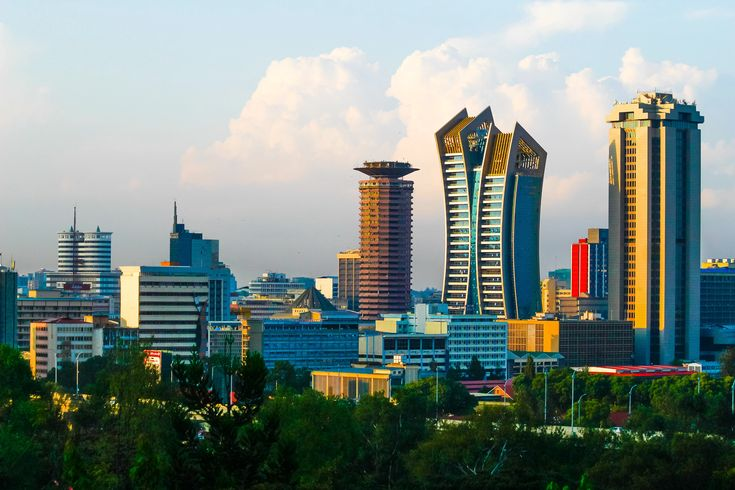

KENYA • TECHNOLOGY • INNOVATION
Kenya's capital city and one of Africa's leading centers for technology, entrepreneurship, finance, trade and regional development.
Nairobi is one of Africa's most influential cities and serves as the economic engine of Kenya. The city has become a major destination for entrepreneurs, investors, multinational corporations and development organizations operating across East Africa.
Its strategic location, growing infrastructure and vibrant innovation ecosystem continue to attract talent and investment from around the world.
Entrepreneurship, trade and regional expansion.
Housing, transport and daily expenses.
Neighbourhoods for professionals and families.
Africa's leading innovation ecosystem.
Property investment and urban development.
Emerging sectors and future opportunities.
Nairobi is often referred to as the "Silicon Savannah" because of its rapidly growing technology sector. The city hosts startups, innovation hubs, fintech companies and international technology firms serving markets across Africa.
Kenya's leadership in mobile payments and digital innovation has helped position Nairobi as one of the continent's most exciting startup destinations.
Major sectors include technology, finance, logistics, telecommunications, agriculture, tourism, manufacturing, real estate and professional services.
The city also hosts numerous regional headquarters for international organizations, NGOs and multinational corporations.
Popular destinations include Nairobi National Park, Giraffe Centre, Karen Blixen Museum, Nairobi National Museum, Karura Forest and the city's growing food and cultural scene.
Nairobi offers a rare combination of modern urban life, wildlife experiences and entrepreneurial energy.